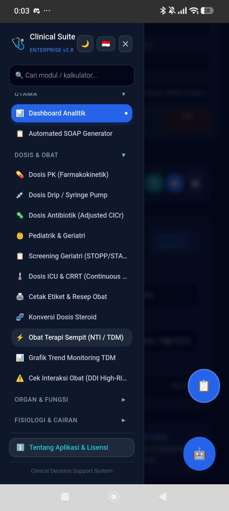

Saya memiliki ketertarikan mendalam dalam dunia pemrograman, khususnya pembuatan web aplikasi fungsional, sistem dashboard manajemen, hingga solusi kustom berbasis digital. Terbiasa merancang logika program yang rapi dan terstruktur untuk menyelesaikan masalah secara efisien.
Portofolio Pilihan
Klik pada kartu proyek di bawah untuk melihat foto utuh dan keterangan lengkap.

Klik untuk Lihat Foto Utuh
Web AppDashboard / Tools
Clinical Suite Dashboard
Aplikasi web sistem manajemen klinis fungsional dengan fitur pencatatan data dan kalkulator parameter terstruktur yang bersih dan responsif.
HTML/JSTailwind CSS
E-Commerce / InventoryManagement System
Sales & Warehouse Tracker
Sistem rekap transaksi penjualan lintas platform dan pemantauan stok gudang otomatis secara real-time untuk efisiensi bisnis.
Web DashboardDatabase Ready
Detail Proyek & Screenshot Full
Clinical Suite Dashboard
Sistem manajemen klinis berbasis web yang dirancang khusus untuk mempercepat rekapitulasi data medis pasien dan menyediakan alat hitung parameter fungsional secara otomatis, meminimalisir kesalahan manual serta menghemat waktu operasional harian.
Fitur Unggulan:
✓ Form pencatatan data pasien yang tersetruktur dan tervalidasi.
Platform pemantauan inventaris gudang dan rekapitulasi transaksi penjualan lintas toko online secara terpusat untuk membantu pemilik bisnis memantau arus barang dan omzet secara real-time.
Fitur Unggulan:
✓ Dashboard ringkasan penjualan harian, mingguan, dan bulanan.
✓ Sistem tracking stok gudang otomatis (stok berkurang saat transaksi tercatat).
✓ Pencatatan multi-platform digital terpusat dalam satu layar.